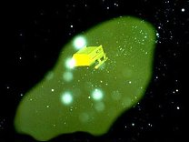
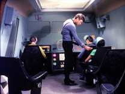
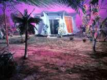
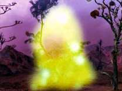
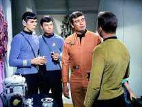
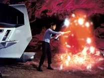

| MANCHETE
DO EPISDIO
Episdio
com personagem histrico deixa concluses para a audincia
Episdio
anterior | Prximo
episdio Sinopse:
Data Estelar:
Desconhecida
Kirk, Spock e McCoy esto retornando a Enterprise
a bordo do Shuttle Galileo, trazendo com eles a comissria da Federao Nancy
Hedford. A comissria, que deveria seguir para Epsilon Canaris 3 a fim de mediar
um conflito, contraiu a doena de Sakuro uma rara e grave enfermidade, e por
isto esta sendo levada a nave para tratamento. Entretanto, no caminho eles so
surpreendidos por um tipo de fenmeno desconhecido, que o obriga a nave a um pouso
forado.
Eles descem em um planeta adequado para a vida humana, segundo
as leituras de Tricorder feitas por Spock e fazem um diagnostico da shuttle, concluindo
que todos os sistemas parecem estar em perfeita ordem, porm nada funciona, inclusive
a comunicao. McCoy tambm identifica leituras idnticas s do fenmeno que os
forou a descer.

Enquanto o doutor apresenta seu relatrio, uma pessoa aparece saudando-os, para
espanto do grupo. A despeito da surpresa do grupo da Federao, o homem se mostra
absolutamente entusiasmado com a presena deles, e pelo fato de poder entender
a lngua dos visitantes. Ele identifica-se como Cochrane, dizendo estar perdido
naquele lugar a muito tempo.
Kirk identifica-se, bem como ao restante
do grupo, e tanto Cochrane quanto Hedford, parecem mais impressionados um com
o outro do que os outros integrantes do grupo. Cochrane mostra interesse tambm
pela nave, o shutlle Galileo, elogiando a nave, mas ao mesmo tempo dizendo que
no como faz-la voltar a funcionar.
As leituras de McCoy confirmam que
se trata se um ser humano. Kirk lhe informa os eventos que o obrigou a descer
naquele lugar, bem como da possibilidade do mesmo fenmeno na superfcie, mas
Cochrane afirma no saber nada sobre isto. Spock ento pergunta por que ele acha
que a nave no pode voltar a funcionar, e recebe a explicao de que um campo
amortecedor que impede sistemas de fora funcionarem.
Kirk pergunta tambm
sobre como Cochrane teria chegado ali, mas este se limita a dizer que se perdeu,
mas que eles tero muito tempo para conversar. Ele convida o grupo para sua casa.
Kirk insiste na questo, mas Cochrane no muda a atitude, insistindo para que
eles vo at a sua casa, construda com sobras dos destroos de seu acidente.
Kirk percebe que no vai conseguir muito, ento pede que Spock mostre-lhe o funcionamento
da nave.
Ele e McCoy voltam a conversar, e Kirk fala a magro que acha
Cochrane familiar, despertando a mesma sensao em McCoy. Alm disto ainda existe
a situao da comissria, que esta ficando mais debilitada, precisando de cuidados
imediatos. Sem muitas alternativas eles vo at a casa de Cochrane.
Uma
vez l, Kirk continua tentando descobrir algo sobre seu anfitrio, enquanto a
comissria comea a sentir os efeitos da doena aumentarem. Nesta hora uma entidade
gasosa aparece por alguns segundos no quintal da casa. Eles perguntam a Cochrane
sobre tal fenmeno, mas esta tenta convenc-los que se tratava de imaginao por
causa da luz. Spock refuta tal afirmao e volta a pedir a uma explicao.
Cochrane ainda tenta ser evasivo, mas Kirk perde a pacincia e exige de uma
explicao. Finalmente este comea a dar alguma informao relevante. Diz que
chama a entidade de companheiro, e que ele o trouxe ao planeta aps Cochrane
um acidente que quase o matou. Tal entidade no s tratou de Cochrane como o rejuvenesceu,
que no sabe explicar o que ela exatamente, apenas que ela existe e se comunica
com ela.
Kirk descobre que o prenome de Cochrane Zefram, inventor da
Dobra Espacial e que teria sido dado como morto a 150 anos. Cochrane diz ter ido
para espao para morrer aos 87 anos de idade, quando foi salvo pelo companheiro,
passando a viver com ele desde ento. Apesar da estria ser fantstica, Spock,
embora ainda incrdulo o primeiro a lembrar que o corpo de Cochrane nunca foi
achado.
Enquanto o quadro de Nancy Hedford vai se agravando, Spock examina
alguns instrumentos encontrados na casa de Cochrane e conclui que estes so da
data indica por este como sendo a de seu desaparecimento. Todas as necessidades
do naufrago espacial incluindo gua e comida so atendidas pelo Companheiro,
segundo ele prprio.
Kirk pede a Cochrane que tente descobrir por que
por que ele e seu grupo foram trazidos para aquele planeta, mas este responde
que j tem tal informao, e que o motivo seria servir de companhia para ele prprio.
Cochrane diz ter se queixado da solido na esperana que o Companheiro o deixa-se
livre, mas ao invs de disto, a entidade resolveu arrumar-lhe companhia.
Ao ouvir tal afirmao Nancy Hedford entra em choque. Kirk manda que Spock faa
novas analises da criatura, procurando por formas de neutraliz-la, mesmo que
seja preciso mat-la para isto. Cochrane diz a Kirk que caso saia daquele planeta
ele voltar a envelhecer, mas afirma que quer sair de l mesmo assim. Ele esta
curioso para saber como o mundo est fora dali depois de todo o tempo que passou
isolado, e Kirk lhe d algumas informaes que aguam ainda mais esta curiosidade.
Kirk ento diz precisar de ajuda para sair dali e Cochrane concorda em oferec-la.
Spock volta ao Galileo, e enquanto trabalha no reparo da nave o Companheiro
aparece novamente. O Vulcano tenta algum contato fsico com a entidade, que
repelido
Violentamente, deixando Spock inconsciente, enquanto os sistemas
da nave auxiliar so danificados pela criatura.

Ainda sem saber o que aconteceu com Spock, Kirk esta concentrada agora em que
tentar fazer com que este convena a criatura em ajudar Nancy, cujo estado de
sade piora a cada instante. Cochrane afirma que eventualmente consegue estabelecer
alguma comunicao com a criatura, mas no sabe dizer como, mas de predispe a
tentar, mesmo sem ter certeza se como faz-lo.
Do lado de fora da casa,
Cochrane, observado por Kirk e McCoy se posiciona para tentar o contato, o que
acaba acontecendo, e durante este processo ambos concluem que a relao do homem
e da criatura e mais complexa do que eles supunham at ento e para decepo de
Kirk, Cochrane diz que o Companheiro no pode ajudar Nancy Hedford, que parece
condenada a morte certa.
McCoy descobre o Spock inconsciente aps o ataque
do companheiro, e tal experincia serviu para que ele descobrisse empiricamente
que a criatura era composta em grande parte por impulsos eltricos. Ele e McCoy
concluem ento que podem causar um curto circuito na coisa, e Spock constri um
aparelho teoricamente capaz de realizar tal propsito. Cochrane, apesar de ter
concordado em ajudar, resiste idia de destruir a criatura que salvou sua vida,
mas aps uma breve discusso com Kirk, ele concorda em servir de isca.
Cochrane entra em contato com a criatura, e quando esta aparece, Spock ativa o
dispositivo, e quando isso acontece Cochrane desmaia. O Companheiro ento ataca
Kirk e Spock violentamente. McCoy pede pela vida dos dois, mas parece intil,
quando Cochrane acorda e percebendo o que acontece chama o companheiro mais uma
vez, que finalmente deixa os dois livres.
Kirk esta vivo, porm ainda
mais frustrado por no ter conseguido destruir a criatura. McCoy sugere ento
que Kirk tente outra alternativa, ao invs de tentar destru-la. O capito pede
agora que Spock tente modificar o tradutor universal para falar com a criatura,
enquanto o quadro de sade de Nancy Hedford vai piorando.
Com Scott no
comando a USS Enterprise chega as ultimas coordenadas conhecidas da Galileu e
como no h sinal do shuttle, ele inicia uma busca, e coloca a Enterprise seguindo
na direo dos ltimos vestgios captados pelos sensores da nave, com esperana
de encontrar algo, uma vez que o rastro que ele seguiam sumiu repentinamente.
No planeta, Spock adapta o tradutor universal de forma a permitir que eles
falem com o Companheiro. Mais uma vez Cochrane chama a criatura, e quando ela
aparece, Kirk consegue se comunicar com ela, e descobre para espanto que na verdade
o ser feminino, e no masculino como se pensava, e que ela esta apaixonada por
Cochrane. Ele tenta convencer a Companheira a libert-los, mas esta est irredutvel.
A criatura deixa o local, e mais uma vez o grupo se rene para discutir o
assunto. Cochrane pergunta por que o tradutor foi construdo com uma voz feminina,
e Kirk explica que no o fez, mas que a criatura assim, o que lhe causa certa
confuso, principalmente quando Spock afirma que a Companheira enxerga em Cochrane
um amante. Surpreendentemente sua atitude quanto ao ser, antes amistosa, agora
muda para raiva, quando ele descobre tal fato.
Nancy Hedford, que ouvia a
conversa apesar de estado de sade, chama por McCoy. Ela mostra que tambm no
entende a reao de Cochrane, que ficou irritado ao descobrir que foi amado pela
criatura 150 anos enquanto Nancy, ao contrario, se recente de nunca ter sido amada.
A Enterprise continua a busca sem sucesso, at que se depara com um cinturo
de asterides com milhares de corpos que podem suportar vida humana, onde o shuttle
poderia ter cado. Apesar da tarefa parecer impossvel, Scott diz a Uhura que
pretende procurar em todos, um a um se necessrio.
Enquanto isto Kirk
volta a carga com o Companheiro, tentando uma nova abordagem, agora baseando-se
na questo do sentimento da entidade por Cochrane. Kirk tenta convencer a criatura
que ela ser a responsvel pela morte de quem tenta proteger, a no ser os liberte,
e diz tambm que ela e Cochrane no podem viver juntos, por serem diferentes.
Mas a tentativa de Kirk no surte o efeito desejado, e mais uma vez ele se
frustra, entretanto, quando discutiam a questo, Nancy aparece de p na entrada
do abrigo, e aps ser examinada por McCoy, conclui-se que ela est sem nenhum
trao da doena que a estava matando.
Na verdade, a Companheira tomou
o corpo de Nancy Hedford, que agora fala como a criatura. Nancy explica que agora
ela partilha seu corpo com a Companheira, e por algum tipo de processo desconhecido,
ambas esto conscientes ao mesmo tempo. Chamando a si mesmo de ns, ela diz
que Nancy estava fraca demais para resistir, caso a unio no fosse feita.
Ela se tenta se aproximar de Cochrane, mas este esta assustado com a nova
condio de ambas. Atravs da experincias de Nancy, a companheira comea
a finalmente entender o significado da solido e compadecer-se da condio de
seu amante.

Kirk manda Spock verificar o Shuttle, mas a Companheira lhe diz que isto no
ser necessrio, pois os equipamentos encontram-se funcionando. Cochrane pergunta
se ela deixara que eles partam, e esta reponde no ter mais o poder de impedi-los,
pois ao uni-se a Nancy, passou a compartilhar sua condio humana, tendo perdido
todos os seus dons especiais, o que a levara entre outras coisas, ao envelhecimento
e a morte, tudo para compreender o significado do amor, da forma dita por Kirk.
Cochrane parece perceber o gesto, e comea a mudar sua posio anteriormente
de repulsa para um certo apreo e carinho. Como um casal de namorados no Jardim
do den, os dois saem para passear deixando para trs Spock, McCoy e Kirk, que
consegue finalmente estabelecer contato com a Enterprise, e informar sua posio.
Longe dali, Cochrane fala a Companheira de sua inteno de lev-la e mostrar
o mundo l fora, mas ela diz que no pode deixar o planetoide onde se encontra,
pois se o fizer morrer, e s ento o homem entende a magnitude do sacrifcio
da Companheira. Esta, por sua vez, apesar de ciente que ir deixar de existir
por causa de sua escolha, declara-se feliz por tela feito, e poder atravs do
corpo de Nancy experimentar sensaes at ento absolutamente desconhecidas para
ela e Cochrane agora se sente impelido a ficar.
A Enterprise chega, e
Scott aguarda o grupo da Galileo, mas Cochrane declara sua inteno de no seguir
com grupo, mesmo sabendo que ele e a companheira envelhecero at a morte, e
pede a Kirk que no conte a ningum sobre ele. O capito concorda, e finalmente,
deixa o planeta e os dois amantes, sozinhos. Comentrios: Muitos
se perguntam se o teletransporte de Jornada nas Estrelas seguro, mas
tal questo deveria ser levantada em relao aos Shutlles. Segunda apario da
nave Galileo na Srie Clssica e segunda tripulao perdida em um planeta
afastado. Um ndice de insatisfao de cem por cento, marca muito difcil de igualar
por outro tipo de transporte pessoal.
Pela terceira vez a Enterprise
transporta um representante da Federao, desta vez Nancy Hedford, tal qual
seus colegas de edies anteriores da Srie Clssica, igualmente arrogante.
Juntos eles vo cair em um planeta distante, com Nancy doente, precisando de tratamento
urgente e uma guerra para impedir.
L eles descobrem que no s esto
ilhados, mas que tem a companhia de um ser humano, mas no de um ser humano qualquer.
O homem apenas o criador da Warp Drive, Zefram Cochrane, que teria morrido a
150 anos atrs.

Todos este ingredientes se juntam para formar a trama de Metamorphosis,
uma trama um pouco insossa em principio, exatamente por juntar elementos de segmentos
anteriores da srie, como a acidente do Shuttle, a presena de um alto funcionrio
da Federao e uma crise por resolver em algum lugar distante. Nem mesmo a presena
do inventor da dobra espacial tira um pouco do ar de pizza requentada neste inicio.
A descoberta de que o acidente do Shuttle foi causado pela mesma criatura
que salvou Cochrane comea a tornar a coisa toda um pouco mais interessante, muito
embora a primeira reao de Kirk tenha sido pensar em destruir a criatura, praticando
o melhor da diplomacia Cowboy . Com tal soluo fracassada, necessrio tentar
o entendimento.
Embora tal soluo (entendimento) deve-se ser considerada
sempre em primeiro lugar por membros de uma Federao teoricamente avanada e
pacifica, esta parece nunca ser a primeira ao quando a Frota Estelar se relaciona
com entidades fisicamente diferentes. Existe um certo sentimento de que preciso
alguma identificao fsica para considerar o direito a vida de outros seres,
algo que soa um pouco preconceituoso a principio. Anotem ai que voltaremos a esta
questo.
Se o tradutor universal j considerado algo equivalente a
uma varinha de condo, dar a ele o poder de se comunicar com uma criatura totalmente
diferente do que a o aparelho est acostumado a lidar no mnimo improvvel.
Porm pior do que isto a teoria de Kirk e Spock, de que uma criatura de energia,
que no tem um crebro (de acordo com o nosso conhecimento humano sobre o que
seja um crebro) possa ter ondas cerebrais que sejam passiveis de comparao
pelo aparelho. Ou que existam certos conceitos universais comuns a toda vida
no universo. Tecnobable do mais infame usado para a dar a chance de Kirk usar
mais uma vez o melhor de sua lgica circular ao vivo e a cores e para identificar
claramente para a audincia a criatura como sendo fmea.
A questo
do gnero, embora possa tambm se encaixar na questo anterior, acaba tendo
utilidade, uma vez que a mudana da posio de Cochrane quanto ao seu relacionamento
com a agora companheira levanta questes interessantes. A ajuda da criatura
sempre foi bem aceita por ele enquanto Cochrane julgava que esta era apenas um
amigo, mas quando o quadro muda para uma relao mais intima, de amor e por que
no dizer, sexo, tal aceitao deixa de existir, certamente por conta dos diversos
dispositivos morais implantados nele.
A questo da aceitao do companheiro
revela tabus e preconceitos sutis, relacionados ao fato de que o ser humano
profundamente guiado pelo que v, e pela sensao de igualdade fsica. Esta noo
de igualdade vai se relacionar com o mundo em aspectos diferentes, mas a noo
de que a semelhana necessria para tal aceitao, fica clara, pelo menos para
o autor, demonstrando uma postura racista por parte de Cochrane. E tambm de Kirk,
que em seu discurso afirma que a companheira no pode am-lo totalmente por
ambos serem diferentes.

Tal diferena serve a Kirk (e justia seja feita, tambm a McCoy) quando este
no pensa duas vezes antes de decidir por eliminar a criatura, e depois a Cochrane
quando este acha que foi usado. Interessante como a mesma questo aciona mecanismos
diferentes, mas igualmente discutveis tanto em Kirk quanto em Cochrane. O primeiro
sequer cogita a possibilidade de entendimento antes que a tentativa de eliminar
a companheira falhe, mas no entende a irritao de Cochrane, enquanto este
se sente forado a no pactuar com o plano inicial de Kirk, mas no aceita a relao
mais intima com a criatura. No fim d na mesma, e as necessidades e crenas
de cada um deles e que so determinantes na ao de cada evento.
No fundo,
Kirk no se sente mortalmente obrigado a preservara criatura uma vez que no se
identifica com ela, e Cochrane se sente ultrajado ao descobrir a verdade pela
mesma razo. Nem Kirk esta preocupado com o direito a vida de cada ser, nem Cochrane
esta disposto aceitar um no igual como parceiro.
Sendo Jornada
nas Estrelas uma srie de fico cientifica, lgico (e verdadeiro) pensar
que tal manifestao tende a nos fazer pensar se estaramos mesmo preparados para
um mundo onde no estamos sozinhos no universo, porem se olharmos para a dcada
de sessenta, poca da produo do segmento, ser fcil encontrar exemplos mais
palpveis e urgentes deste sentimento, principalmente contra a populao negra,
mas no somente eles.
Porm, ainda na opinio do autor, um entendimento
mais sutil da questo do preconceito foi embutido neste segmento de forma no
intencional pelos seus autores, aquele que diz que para haver um relacionamento
de amor entre Cochrane e a entidade, esta precisava necessariamente ser fmea.
Se apenas pelo fato de seu parceiro no ser humano Cochrane teve um surto de
ira, imagine se descobrisse tambm que era ele. !? O que prova que mesmo entre
aquele que lutam contra o preconceito, existem outros preconceitos ocultos.
Indiferente a estas consideraes, a companheira, ao assumir a forma humana
no corpo de Nancy Hedford demonstra que sabe mais sobre o amor do que os humanos,
pois no se detm em fazer o sacrifcio Mximo para poder estar ao lado daquele
que ela escolheu amar. Ao contrrio do que Kirk afirma, ela entende o amor e esta
disposta a fazer o que for possvel por ele.
Cochrane, ao perceber isto,
tambm est disposto a sacrificar sua liberdade para poder retribuir este amor.
Antes tarde do que nunca, porm tanto o criador da dobra espacial quanto o capito
da Enterprise deixam claro que tem muito ainda a aprender sobre igualdade e tolerncia
e por que no, sobre o amor.

Alm das explicaes improvveis sobre o tradutor universal o episodio tem outros
deslizes, como a necessidade clich de Kirk de assumir o peso do mundo nas costas,
ou a caracterizao de mais um representante da Federao (Nancy Redford) como
uma pessoa arrogante e intransigente. No d para colocar a culpa deste comportamento
na doena da menina, pois a terceira vez que este perfil se repete, primeiro
em "The Galileo Seven",
depois em A
Taste of Armageddon, o que
j representa um padro para o perfil. Se a Srie Clssica uma metfora
de sua poca, d bem para entender que juzo eles faziam dos funcionrios do governo
fora das foras armadas na poca.
Com a chegada as telas de First
Contact as telas do cinema em 1996, Metamorphosis voltou a baila,
uma vez que alguns de seus elementos foram aproveitados como referencia o filme
de maior sucesso de A Nova Gerao. Muito se fala que o filme contradiz
o segmento da Srie Clssica, o que no deixa de ser verdade, mas a grande
questo aqui talvez seja a data do primeiro contato. Se assumirmos tal data do
primeiro contato como a do filme, 4 de Abril de 2063, e somarmos mais 150 anos
(tempo do sumio de Cochrane) mas os 80 anos que separam os eventos de Kirk e
Picard em Generations vamos encontrar a Srie Clssica dentro
do inicio do sculo 23, e A Nova Gerao no final. No mais, o Cochrane
de Alfa Centauri estava cansado de tudo e resolveu partir algo que bem pode
ser creditado ao perfil do homem que conhecemos em Primeiro Contato.
Um pergunta que no quer calar: Quem seria O criador de todas as coisas
?
Metamorphosis tem seus l seus problemas, mas faz interessantes
perguntas, e no
d nenhuma resposta pronta, deixando a cada um a tarefa de
faz-lo, ou tentar ai menos, e isto j por si s j conta pontos. Citaes:
Kirk: "Not one hundred
percent efficient, of course... but nothing ever is."
("No
cem por cento eficiente, claro, mas nada .") Kirk:
"The idea of male and female are universal constants."
("A
idia de macho e fmea so constantes universais.")
Kirk: "Love
sometimes expresses itself in sacrifice."
("Amor algumas vezes
se expressa em sacrifcio.")
McCoy: "There's nothing disgusting
about it [the Companion]. It's just another life form, that's all. You get used
to those things."
("No h nada de errado com isto. Ele apenas
outra forma de vida, s isso. Como o tempo voc se acostuma a estas coisas.")
Kirk: "We estimate there are millions of planets with intelligent
life. We haven't begun to map them."
("Nos estimamos que existam
milhares de planetas com via inteligente. Nos no comeamos a mapear todos eles.")
Kirk: "There are certain universal ideas and concepts common to all
intelligent life. This device [the universal translator] instantaneously compares
the frequency of brain wave patterns, selects those ideas and concepts it recognizes,
and then provides the necessary grammar."
("Existem certas idias
e conceitos universais comuns a toda vida inteligente. Este dispositivo instantaneamente
compara e freqncia padro das ondas cerebrais, seleciona estas idias e conceitos
e os reorganiza, fornecendo a gramtica necessria.")
Spock:
"You [humans] are, after all, essentially irrational."
("Voc
humanos so antes tudo irracionais.") Trivia:  Este episdio introduziu o tradutor universal
Este episdio introduziu o tradutor universal
Elinor Donahue participou de diversas series de TV ao longo de sua carreira (inclusive
uma participao em Friends em 1994). Em uma destas participaes, na famosa serie
Papai Sabe Tudo (Father Knows Best) ela atuou com Jane Wyatt, co-estrela da
srie e que ficou conhecida em Jornada como Amanda, a me de Spock.
Glen Corbett, o primeiro Zefran Cochrane da histria de Jornada nas Estrelas,
participou da serie Dallas interpretando o personagem Paul Morgam. O curioso
e que um dos episdios protagonizados por ele teve o titulo de When the Bough
Breaks, mesmo titulo de um segmento da primeira temporada de A Nova Gerao.
Corbett faleceu em 1993 de cncer de pulmo, trs anos antes The First Contact
ir s telas de cinema.
Elizabeth Rogers, que faz a voz original da Companheira e voltaria srie em
carne e osso como a tenente Palmer nos episdios Doomsday Machine e The
Way to Eden.
Richard Edlund, ento trabalhando para a Westheimer Company, foi o responsvel
pelo efeito visual da companheira. A Westheimer esteve envolvida em Jornada
nas Estrelas IV - A Volta para Casa e Edlund, posteriormente nas seguintes
produes ganhadores do Oscar por efeitos visuais.
Raiders Of the Lost
Ark (Caadores da Arca Perdida) 1981
Star Wars: Episode IV - A New Hope 1977
Star Wars: Episode V - The Empire Strikes Back 1980
Star Wars: Episode VI
- Return Of the Jedi 1983
Os seguintes filmes onde Edlund tambm trabalhou
receberam indicaes ao Oscar
Poltergeist 1982
2010 1984
Poltergeist
II 1986
Ghostbusters (Caa-Fantasmas) 1984
Die Hard (Duro de Matar) 1988
Alien 3 1992
Ficha
tcnica: Escrito
por Gene L. Coon
Dirigido por Ralph Senensky
Msica: George
Duning
Exibido em 10/11/1967
Produo: 31 Elenco:
William Shatner como James Tiberius
Kirk
Leonard Nimoy como Spock
DeForest Kelley
como Leonard H. McCoy
Nichelle Nichols como Uhura
George
Takei como Hikaru Sulu
Elenco convidado:
Glenn Corbett
como Zefram Cochrane
Elinor Donahue como Nancy Hedford
Majel
Barrett a voz do companheiro
Episdio anterior |
Prximo episdio
|